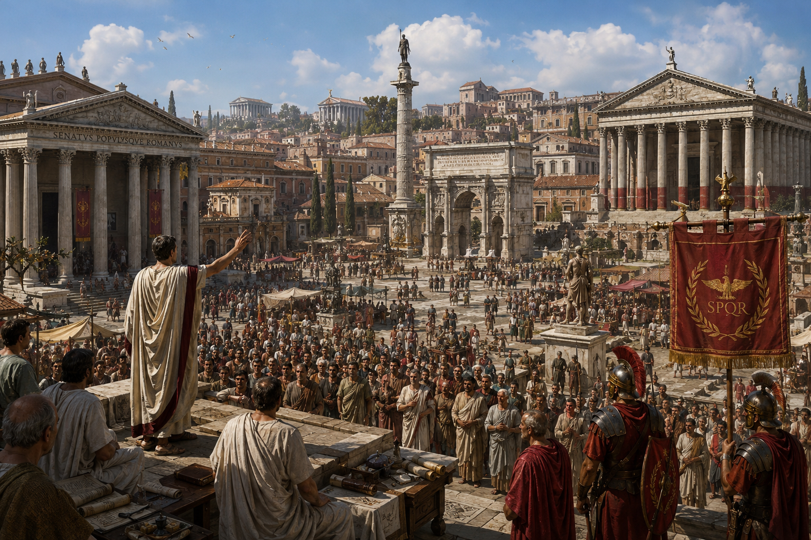
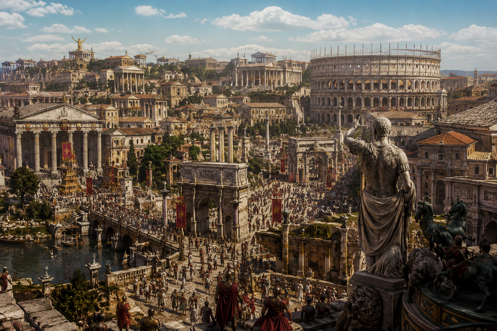

Roma tiene una de las historias más interesantes, durante más de 1.200 años, Roma pasó de ser una aldea de pastores al lado del río Tíber a convertirse en la potencia más fuerte de la antigüedad occidental. En esta web hablaremos desde sus orígenes en el 753 a.C. hasta la caída del imperio occidental en el 476 d.C., en ese tiempo estuvo la monarquía primitiva, la República que se hizo sinónimo de poder político, la expansión imperial bajo Augusto y sus sucesores, y al final una lenta transformación que terminó con la pérdida de la autoridad romana en occidente.
La civilización romana fue más que un simple imperio militar (dejó una huella marcada en la arquitectura, la literatura, la filosofía y los sistemas legales que usamos hoy). Su influencia llega desde el Derecho Romano, que sirvió de base a muchos sistemas jurídicos modernos, hasta la forma de las ciudades que siguen los modelos urbanos romanos. Para entender bien cómo se hizo occidente tal como es, es necesario estudiar Roma, como una historia de glorias y derrotas, cómo se construye, se mantiene y, al final, se transforma una civilización.
Un recorrido por las grandes etapas de la civilización romana, su legado en Hispania y cómo la cultura clásica inspira la industria del videojuego.
El período que los historiadores denominan la Monarquía Romana abarca desde la legendaria fundación por Rómulo en el 753 a.C. hasta el año 509 a.C., cuando fue expulsado el último rey, Tarquinio el Soberbio pero, la leyenda menciona siete reyes, es importante recordar que la información histórica sobre los primeros monarcas es fragmentaria y frecuentemente legendaria, especialmente en lo que respecta a los reyes más antiguos. Estos monarcas, sean reales o semi-legendarios, jugaron un papel fundamental en la configuración de la identidad romana y en la creación de las instituciones que la ciudad heredaría.
El surgimiento de la República Romana (509 a.C.) representa un momento revolucionario en la historia política mundial, con la expulsión de Tarquinio el Soberbio, la aristocracia romana decidió no reemplazarlo con otro rey, la solución fue crear un sistema de gobierno, el poder tendría que estar distribuido entre varios cónsules que se encargaban de temas del Senado y del pueblo.
Esto reflejó desconfianza hacia el poder concentrado en una sola persona, por los abusos del últimas monarquía. El sistema republicano romano se convirtió en un modelo de gobierno particular que mezclaba elementos democráticos (participación de las asambleas populares), aristocráticos (el dominio del Senado) y ejecutivos (los magistrados elegidos), llegando un equilibrio de poderes que, fue imperfecto pero, demostró ser duradero.

Con la muerte de Augusto en el año 14, sus sucesores enfrentaban un desafío: mantener el sistema que había creado sin su carisma y su genio político, los primeros emperadores (la dinastía Julio-Claudia (porque Augusto era de la familia Julia y su sucesor era de la familia Claudia)), mantuvieron el sistema, con dificultades.
Tiberio (14-37 d.C.), el hijastro de Augusto elegido como sucesor, fue un general competente pero políticamente torpe. Mientras Augusto había preservado la ficción republicana con elegancia, Tiberio fue más brutal y directo: cuando el Senado sugería una política, él la ignoraba; cuando los senadores lo elogiaban (como era la práctica), él los despreciaba (el Senado fue una meramente institución decorativa con sus miembros sirviendo principalmente para la apariencia), algunos historiadores de su época, como Tácito o Suetonio, lo describieron como un tirano con paranoia, aunque parece que fue principalmente un hombre difícil sin del talento de su predecesor para la política.
Calígula (37-41 d.C.), el nieto de Tiberio, llegó al poder como un joven de 23 años y durante el primer año de su reinado fue popular, poco después comenzó a exhibir un comportamiento errático que la tradición describe como locura maníaca: gastó el tesoro en festivales, construyó un puente de botes sobre la bahía de Nápoles para cabalgar sobre él, supuestamente nombró a su caballo Incitatus como cónsul (aunque esta historia es probablemente exagerada por historiadores posteriores) y ejecutó a muchos aristócratas. Después de cuatro años de reinado cada vez más inestable, fue asesinado por los miembros de la Guardia Pretoriana, la unidad militar que protegía el emperador.

“Roma no se construyó en un día, ni su legado se apagó con la caída de sus fronteras; vive en nuestras leyes, lenguaje y arte.”
— Historiografía del Mundo Clásico !
PERIODO INICIO FIN EVENTO CLAVE --------------------------------------------------------------------- Monarquía 753 a.C. 509 a.C. Fundación de Roma República 509 a.C. 27 a.C. Expansión mediterránea Imperio Romano 27 a.C. 476 d.C. Esplendor de Hispalis